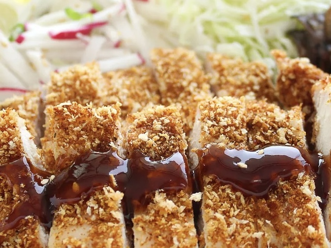

Chicken Katsu: Japanese-style Fried Chicken

Photo by Mitsuha Kirigaija
Description
Katsu is a Japanese dish of crispy fried cutlets coated with Panko
bread crumbs. Popular varieties are chicken katsu (like this recipe)
and tonkatsu (which is made with pork). Serve with white rice and
tonkatsu sauce.
Recipe by
sakuraiiko
on
allrecipes
Ingredients
-
4 skinless, boneless chicken breast halves - pounded to 1/2 inch
thickness
- Salt and pepper to taste
- 2 tablespoons all-purpose flour
- 1 egg, beaten
- 1 cup panko bread crumbs
- 1 cup oil for frying, or as needed
Steps
-
Season chicken breasts on both sides with salt and pepper. Place
flour, beaten egg, and panko crumbs into separate shallow dishes.
Coat chicken breasts in flour, shaking off any excess; dip into egg,
and then press into panko crumbs until well coated on both sides.
-
Heat oil in a large skillet over medium-high heat. Place chicken in
the hot oil, and fry until golden brown, 3 or 4 minutes per side.
Transfer to a paper towel-lined plate to drain.